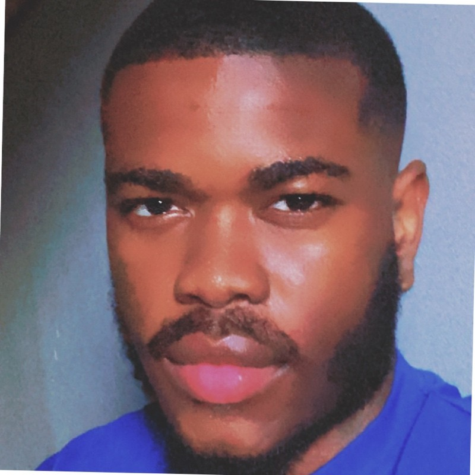

Alessandro Cipriano | WDD 130
Hi, I'm Alessandro Cipriano, a 22-year-old software development student with a passion for technology and making a positive impact. Currently pursuing my degree at BYU.Outside of coding, I'm an avid gamer who enjoys the challenge and creativity that video games offer. My faith is also a significant part of my life, and I find peace and purpose in regularly attending church. When I'm not gaming or at church, you'll likely find me deep in my studies, always eager to learn something new and expand my skills.